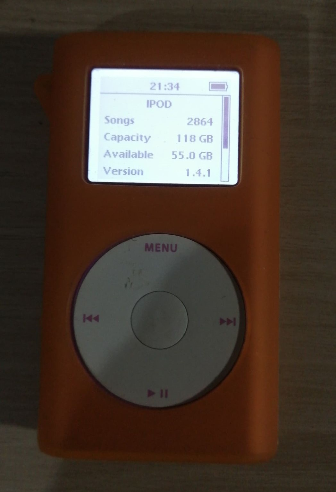

What is it?
- As part of another side project I took up during the holidays in lockdown, I decided I would start modifying iPods. This began from a previous interest in audio, and I’d found that videos on different modifications people had made to iPods to increase features while still using the excellent components in some of the early models were highly entertaining, and made the hobby seem vastly more approachable than when I’d first heard of it. By removing the hard drive, changing the OS, replacing the battery, and optionally changing the external housing, it’s possible to take an older iPod (favourites among the community include the iPod Video, thought of as having the best sound card of all iPods by some, with the “enhanced” version being a collectable, and the 2nd generation of the iPod Mini, which features similar components to other iPods now called “classic”), add flash memory in place of the on board disk drives many of the early models featured, change the operating system for something more feature rich, and still benefit from all the positives, such as the design and form factor, and the high quality components.
Why I made it
- As well as just being a challenge, and something to do during lockdown, I’ve increasingly found that music streaming services don’t work for me. Many of them don’t actually feature work from my favourite artists, I don’t always have internet connection, my phone’s DAC is less than ideal, and the quality of the sound files while perfectly listenable isn’t as good as it could possibly be, although this is a negligible factor. To make the best of this situation, by adding flash memory to old iPods, it allows the OS which is of course using the same processor to access the files much faster, giving the illusion of it being a newer model, and by modifying the OS itself, and using something such as Rockbox in place of Apple’s own OS, it allows users to add file types not previously able to be added, and bypass the use of iTunes altogether, an undeniable positive on windows PCs. The addition of other components, such as fresh batteries, newer housing, and replacement hold assemblies gives what’s starting to become a retro collectable item a new lease on life, and a great deal of additional functionality. It’s not a particularly practical skill to have. iPods are fussy about how they work, and individualistic on how to repair them, even on the same model over different generations, so there aren’t too many transferrable skills, however, it’s a fun hobby, and I enjoyed picking it up and showing off the results.
